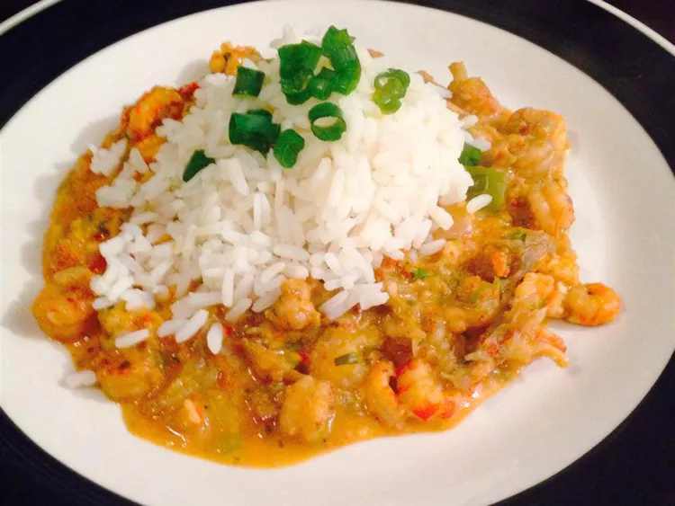

Crawfish Étouffée

Crawfish Étouffée is one of my all time favorite foods. Quick and easy to whip up and a definite crowd pleaser. Original recipe sourced from All Recipes.
Ingredients
- 3 cups long grain white rice
- 7 cups water, divided
- ¾ cup butter
- 1 large onion, chopped
- 1 clove garlic, chopped
- ¼ cup all-purpose flour
- 2 tablespoons canned tomato sauce
- 1 pound crawfish tails
- 6 green onions, chopped
- salt and pepper to taste
- 1 ½ tablespoons Cajun seasoning, or to taste
Instructions
- Combine rice and 6 cups water in a saucepan. Bring to a boil over high hea
- Reduce heat to low, cover the pan, and simmer until rice is tender and water has been absorbed, 15 to 20 minutes.
- While rice cooks, melt butter in a large skillet over medium heat. Add onion and cook, stirring, until transparent. Stir in garlic and cook until fragrant, about 1 minute.
- Stir in flour until blended. Gradually stir in tomato sauce and remaining 1 cup water. Add crawfish tails and bring to a simmer.
- Stir in green onions and season with salt, pepper, and Cajun seasoning.
- Reduce heat to low and simmer until crawfish is cooked through but not tough, 5 to 10 minutes.
- Serve étouffée over cooked rice.